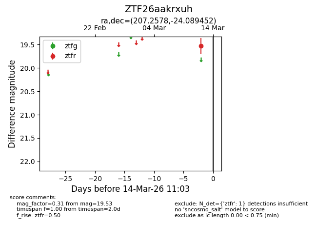
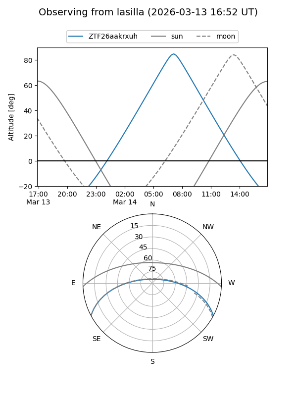
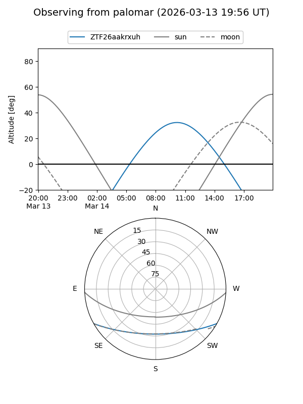
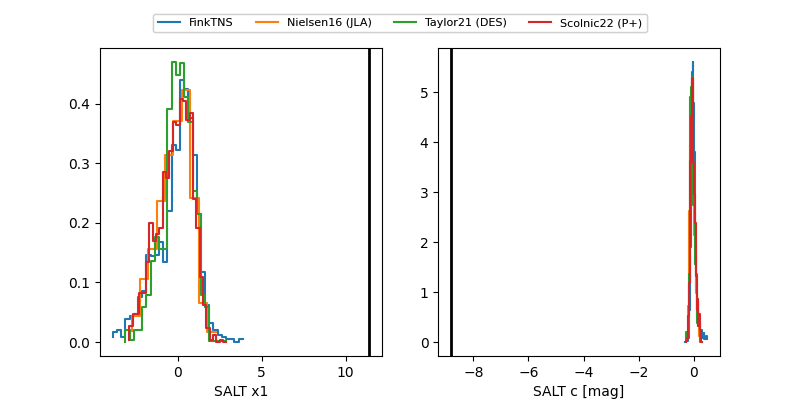

ZTF26aakrxuh
Target ZTF26aakrxuh at 2026-03-14 11:05
Aliases and brokers:
FINK: link
Lasair: link
ALeRCE: link
alt names
ZTF26aakrxuh (ztf,fink_ztf)
Coordinates:
equatorial (ra, dec) = 207.2578,-24.08945
equatorial (HMS+DMS) = 13:49:01.86,-24:05:22.03
galactic (l, b) = (319.4299,+36.93033)
Flags:
Photometry:
last ztfr=19.53
1 ztfr detections
Lightcurve

Visibility


Additional plots
